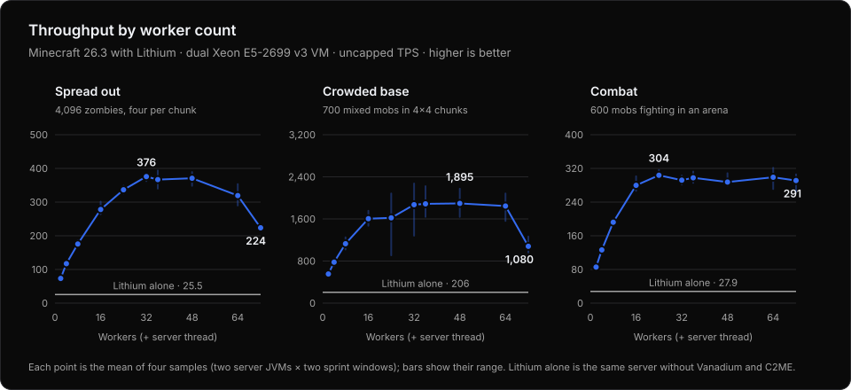

Worker count
Uncapped TPS by workers, against the same server with Lithium but without Vanadium and C2ME
("Lithium alone", one tick thread, default Lithium options). Means of four samples with their range;
all 132 samples (CSV).

e29ec28, isolation = 2, no extra JVM flags. Generated from docs/benchmarks/worker-scaling-26.3.csv.
| Workers | Spread out: 4,096 zombies | Crowded base: 700 mobs | Combat: 600 mobs |
|---|---|---|---|
| Lithium alone | 25.5 (22.9–27.0) | 206 (188–223) | 27.9 (25.6–30.6) |
| 2 | 73 (72–75) | 554 (526–581) | 86 (82–89) |
| 4 | 117 (113–122) | 778 (704–826) | 126 (123–131) |
| 8 | 176 (169–187) | 1,129 (1,020–1,250) | 192 (185–200) |
| 16 | 278 (264–301) | 1,605 (1,471–1,754) | 280 (267–301) |
| 24 | 337 (326–348) | 1,621 (909–2,083) | 304 (296–317) |
| 32 | 376 (362–383) | 1,871 (1,282–2,273) | 292 (282–303) |
| 36 (default) | 367 (340–394) | 1,887 (1,639–2,222) | 298 (286–313) |
| 48 | 371 (348–389) | 1,895 (1,639–2,174) | 288 (279–309) |
| 64 | 319 (290–353) | 1,845 (1,563–2,083) | 299 (271–322) |
| 72 | 224 (219–232) | 1,080 (962–1,266) | 291 (265–306) |
- At the default 36 workers the three workloads run 14.4×, 9.1× and 10.7× faster than Lithium alone. Two workers already give 2.7–3.1×, eight give 5.5–6.9×.
- Throughput levels off between 24 and 48 workers. The spread-out world peaks at 32, the crowded base at 48 and combat at 24, but the neighbouring counts are within noise: the default of 36 measured 98%, 99.6% and 98% of each peak, inside the peak's sample range.
- One worker per logical processor (72 here) leaves none for the server thread, C2ME and the collector. It ran 40% and 43% below the best setting for the spread-out world and the crowded base.
- Combat no longer loses throughput with more workers (it lost 18% from 24 to 48 in the 2026-11-13 sweep at
f3658bf, before the second wave): its entity wave runs on no more threads than its longest tick leaves work for, about 30 here, and the other workers stay parked. 72 workers ran 4% below its peak. - Against the previous default of 48 workers, 36 measured −1%, −0.4% and +3.5% in this sweep: within noise on all three. Before the second wave (
a74931b, default worker count) 36 beat 48 by 13% in combat. On this machine the default is as good a single setting as any; elsewhere, start from it and measure with/vanadium benchmark.
Measured 2026-11-14 at commit e29ec28 (after the second wave), isolation = 2, no extra JVM flags
(recommended flags add 12–65% on top). One fresh server JVM per point and
pass: Lithium alone, an ascending pass over the worker counts, a descending pass, then Lithium alone
again. Each JVM runs two /tick sprint windows (four samples per point) of 2,000 ticks for the
spread-out world, 15,000 for the crowded base and 2,500 for combat. The spread-out world force-loads
32×32 chunks; the other two are the workloads below. Environment as in
Environment and limits, with vCPUs pinned.
- The crowded base's second sprint window is always faster than its first (by 9–22% in earlier sweeps, with and without Vanadium), which is what widens its ranges; one first window at 24 workers (909 TPS) is a low outlier. The sprint report rounds to 0.01 ms per tick, about 2% at 2,000 TPS.
- The previous sweep (2026-11-13 at
f3658bf, before the second wave and before vCPU pinning) read 21.2 / 187 / 23.1 TPS for Lithium alone and peaked at 262 / 1,429 / 244. Lithium alone is the same software in both, so part of the difference between sweeps is the machine; compare builds within one table (before and after the second wave), not across sweeps. - An even earlier sweep used 1,000-tick windows, which lasted about one second on the crowded base and read lower there (Lithium alone: 119 TPS). Do not compare its numbers with these.
Default worker count
workers = 0 gives min(physical cores, logical processors − 1): every core gets a worker and the
server thread, which joins every wave, gets the remaining logical processor (an SMT sibling, or a core
without SMT). Uncapped TPS, mean of eight samples with their range, the same build at four explicit counts:
| Workers | Spread out | Crowded base | Combat |
|---|---|---|---|
| 32 | 269 (260–276) | 1,418 (1,124–1,613) | 258 (244–271) |
| 35 | 261 (242–279) | 1,428 (1,220–1,639) | 259 (243–273) |
| 36 (default) | 263 (256–270) | 1,446 (1,333–1,587) | 252 (246–260) |
| 48 (previous default) | 270 (263–288) | 1,402 (1,220–1,539) | 223 (213–232) |
32, 35 and 36 workers are within noise of each other on every workload. 36 against 48: combat
+13%, the crowded base +3% (within its spread), the spread-out world −3%. Small machines, emulated
with CPU affinity (taskset, which the default follows) on the same host:
| CPUs | Workers | Spread out | Combat |
|---|---|---|---|
| 4 cores × 2 threads (CPUs 0–7) | 3 | 87.5 (73.1–96.2) | 123 (117–131) |
| 4 (default) | 93.9 (90.8–95.8) | 124 (119–129) | |
| 5 (previous default) | 93.0 (83.2–98.1) | 128 (119–136) | |
| 4 cores × 1 thread (CPUs 0, 2, 4, 6) | 3 (default) | 84.6 (75.2–90.9) | 117 (110–124) |
| 4 | 78.5 (74.9–80.5) | 101 (96–106) |
Without SMT, one worker per core plus the server thread oversubscribes the cores: 3 workers beat 4
by 8% and 16%. With SMT the server thread fits on a sibling, and 4 workers are within noise of 5.
Measured 2026-11-14 at commit a74931b (isolation = 2, explicit workers), one fresh server JVM per
point, four rounds with the order of the counts rotated each round, two /tick sprint windows per JVM.
Hot paths, node pooling, and spawning contention (PR #47)
Mirrored A/B measurements comparing 1396348 (after PR #46) against 5fd9431
(PR #47: allocation-free InsideBlockFastPath, primitive DDA LineOfSightFastPath,
pooled pathfinding nodes on TickThread.walkScratch, lock-free all-status reads and wave proto-chunk
caching in ParallelChunkCache, and ClaimWave 30 µs spin-then-park with selective wake).
Measured 2026-11-21 on the dual Xeon VM at 36 workers, isolation = 2, -Xms4G -Xmx4G.
| Workload / metric | Runs / arm | Before (1396348) |
After (5fd9431) |
Delta |
|---|---|---|---|---|
brawl600@36 (w2, 2,500t) | n=8 | 587.7 mean (591.9 med) | 721.5 mean (724.8 med) | +22.8% (+22.5% med) |
uniform4096@36 (w2, 1,000t) | n=4 | 349.0 mean (350.7 med) | 392.2 mean (392.2 med) | +12.4% (+11.8% med) |
dense700@36 (w2, 4,000t) | n=6 | 1,512.4 mean (1,646.5 med) | 1,730.5 mean (1,754.4 med) | +14.4% (+6.6% med) |
brawl600@36 JFR allocations (5,000t) | paired | 20.82 GB (9 GCs / 104 ms) | 11.41 GB (5 GCs / 67 ms) | −45.2% |
uniform4096@36 JFR allocations (2,000t) | paired | 19.42 GB | 16.16 GB | −16.8% |
mixedBench tick_p50_ms (5×1200t) | paired JFR | 26.79 ms | 23.72 ms | −11.5% |
mixedBench SPAWNING stage avg | paired JFR | 5.305 ms (p95 10.02) | 2.407 ms (p95 4.48) | −54.6% |
mixedBench BLOCK_ENTITY stage avg | paired JFR | 2.042 ms | 1.758 ms | −13.9% |
mixedBench C2ME ItemHolder waits | paired JFR | 125,409 ms (173,238) | 62.2 ms (146; 0 spawning) | −99.95% |
mixedBench ClaimWave spin/scan | paired JFR | 20,808 samples | 1,214 samples | −94.2% |
Before and after the second wave
Vanadium before and after the second round of tick-path work: one worker per physical core by
default, allocation-free hot paths (Entity.isInWall, entity box queries, the path-type cache), no
mob count while spawn_mobs is false and a cheaper one otherwise, a shorter combat tail (costliest
entity kinds first, no more threads than the longest tick leaves work for, the server thread spinning
through it) and entity homes. Both builds at 36 workers, no extra JVM flags. Means of 16 samples
(eight server JVMs × two sprint windows) with their range, in uncapped TPS;
all 96 samples (CSV).
| Workload | Before | After | Change |
|---|---|---|---|
| Spread out | 261 (244–275) | 379 (344–427) | +45% |
| Crowded base | 1,440 (1,220–1,695) | 1,965 (1,639–2,273) | +36% |
| Combat | 237 (207–273) | 295 (272–329) | +25% |
- "After" ran faster than "before" in all eight rounds of every workload. Like windows agree: first windows +44% / +30% / +27%, second windows +47% / +42% / +23%.
- Both arms ran with
workers = 36, so the new default is not part of these numbers. Against the previous default of 48 workers, the "before" build (a74931b) measured 3% faster on the spread-out world and 13% slower in combat. - Spawning was off, as in every sprint benchmark here. A dedicated server with
spawn_mobsfalse now skips the mob count; that alone measured +14% on the spread-out world and +26% on the crowded base. With spawning on the count still runs every tick: the cheaper count measured +9% on the spread-out world and no change on the crowded base, whose 700 mobs are counted serially in both builds.
Measured 2026-11-14, isolation = 2: commit a74931b (before) against e29ec28 (after), in
alternating server JVMs with the order of the builds reversed every round.
Recommended JVM flags
On Linux with more than one NUMA node (lscpu shows the node count), and with memory to dedicate to the server:
java -Xms4G -Xmx4G -XX:+UseNUMA -XX:+UseTransparentHugePages -XX:+AlwaysPreTouch \
-XX:+UseCompactObjectHeaders -jar server.jar nogui
Use the same value for -Xms and -Xmx, sized to what the machine can give the server; these
measurements used 4 GiB, and an earlier study found an 8 GiB heap 6% slower than 4 GiB on the
spread-out world. Leave room outside the heap for the JVM, mods and operating system; 4 GiB is the
benchmark heap, not a sizing recommendation for every modpack.
| Workload | No extra flags | THP + pre-touch + compact headers | …plus UseNUMA |
UseNUMA alone |
|---|---|---|---|---|
| Spread out (series 1) | 379 (356–402) | 440 (418–461), +16% | 543 (468–613), +43% | – |
| Spread out (series 2) | 372 (353–388) | – | 613 (584–638), +65% | 547 (519–589), +47% |
| Crowded base | 1,965 (1,897–2,020) | 2,143 (2,042–2,277), +9% | 2,678 (2,424–2,803), +36% | 2,239 (1,595–2,492), +14% |
| Combat | 295 (285–313) | 291 (271–303), −1% | 329 (319–345), +12% | 314 (308–326), +7% |
- All four flags together were ahead of no flags in every round of every workload (32 of 32), and ahead of
UseNUMAalone in 22 of 24 rounds. -XX:+UseNUMAcarries most of the gain. With it, G1 hands each thread new objects from heap regions in its own node's memory; with entity homes the same worker ticks the same entities every tick.- At normal 20 TPS (spread-out world,
/vanadium profile 60, four alternating servers per arm) average tick fell from 6.98 ms (6.61–7.39) to 5.15 ms (5.03–5.31), p95 from 10.97 to 7.86 ms and p99 from 22.7 to 14.5 ms. - The whole heap is committed at start:
-XX:+AlwaysPreTouchcommits 4.8 GiB resident on a 4 GiB heap and adds ~4 s to startup. - Huge pages need kernel consent:
/sys/kernel/mm/transparent_hugepage/enabledmust bemadviseoralways. UseNUMAneedslibnuma.so.1onLD_LIBRARY_PATH;-Xlog:gc+initprintsNUMA Support: Enabledwhen active. Omit on single-node hosts.- Compact object headers are a product feature in Java 25 (JEP 519). Drop
-XX:+AlwaysPreTouchand-XX:+UseTransparentHugePagesif memory is shared with other services.
Measured 2026-11-14 at commit e29ec28, workers = 36, isolation = 2, G1, -Xms4G -Xmx4G.
Before and after the tick-path changes
Vanadium before and after #16: section lock taken only when an entity changes section, tick collection kept across ticks, fan-out worker wake-up, sliced spawn counting, cell grids for crowded sections and an entity wave ordered by cost. Means of four samples with their range, in uncapped TPS; all 56 samples (CSV).
| Workload | Workers | Before | After | Change |
|---|---|---|---|---|
| Combat | 24 | 180 (178–184) | 260 (249–273) | +45% |
| Combat | 32 | 181 (175–188) | 235 (230–246) | +30% |
| Combat | 48 | 164 (159–168) | 208 (196–215) | +27% |
| Spread out | 8 | 109 (103–117) | 118 (114–123) | +9% |
| Spread out | 24 | 197 (193–205) | 231 (214–240) | +17% |
| Spread out | 48 | 226 (219–235) | 261 (258–264) | +16% |
| Crowded base | 24 | 1,313 (1,220–1,409) | 1,293 (926–1,493) | no measurable change |
Measured 2026-11-12, isolation = 2: commit 2ac2660 against f3658bf.
At normal 20 TPS (spread-out world, 24 workers, 60 s) average tick fell from 7.2–7.5 ms to 6.2–6.3 ms
and mean CPU per worker from 15% to 11–12%.
Flat entity wave against regions
Entities tick in one wave with no regions, so throughput no longer depends on how close together they are.
Measured 2026-11-11 against the previous region-scheduled entity mode (isolation = 1);
all 40 samples (CSV).
| Workload | Workers | Regions | Flat wave | Change |
|---|---|---|---|---|
| 700 mixed mobs in 4×4 chunks | 24 | 282 (233–324) | 821 (617–1,020) | 2.9× |
| 700 mixed mobs in 4×4 chunks | 8 | 335 (261–405) | 551 (385–694) | 1.6× |
| 600 mobs in 6×6 blocks (one chunk) | 8 | 107 (90–128) | 510 (352–676) | 4.8× |
| 2,000 villagers in 8×8 chunks | 24 | 88 (82–96) | 187 (139–218) | 2.1× |
| 600 mobs fighting in a 34×34 arena | 24 | 21 (20–23) | 168 (157–179) | 7.8× |
Over 2,400 ticks of the arena (300 zombies, 200 villagers, 100 iron golems with Resistance), the flat wave performed ~41,000 cross-entity damage writes and 2.1 million queued pushes with no lock cycle, no timeout and no skipped tick (0.8% of samples in the ownership protocol, 0.3 s monitor contention total).
Entity homes
Whether an entity ticks on the same core from tick to tick (Architecture). Uncapped TPS, mean of eight server runs with their range; measured 2026-11-14 on the dual Xeon VM.
| Workload, workers | Baseline | Homes | Homes + pinned |
|---|---|---|---|
| Spread out, 36 | 315.6 (310.1–324.8) | 409.7 (386.7–428.5), +29.8% | 394.4 (381.2–411.1), +24.9% |
| Spread out, 24 | 279.2 (266.8–288.1) | 329.3 (313.8–335.6), +17.9% | 318.2 (293.3–352.3), +14.0% |
| Crowded base, 36 | 1,922 (1,862–1,980) | 2,025 (1,949–2,112), +5.3% | 1,974 (1,840–2,037), +2.7% |
| Combat, 36 (homes in every wave) | 294.5 (273.1–304.3) | 278.5 (266.1–294.6), −5.4% | 288.5 (274.8–303.8), −2.0% |
| Combat, 36 (homes only with every worker, kept) | 281.5 (265.4–292.4) | 289.4 (269.1–305.3), +2.8% | – |
Guest hardware counters (perf stat, per tick):
| Workload, workers | Remote HITM | Remote forward | Stall cycles / L2 miss |
|---|---|---|---|
| Spread out, 36: baseline → homes → pinned | 36.6K → 8.3K → 4.3K | 32.8K → 6.9K → 4.1K | 124 → 102 → 92 |
| Spread out, 24 | 39.4K → 8.2K → 3.7K | 34.9K → 7.7K → 3.3K | 99 → 85 → 72 |
| Crowded base, 36 | 5.0K → 2.7K → 2.0K | 1.4K → 1.0K → 0.9K | 82 → 81 → 86 |
| Combat, 36 | 16.8K → 16.2K → 12.9K | 5.7K → 5.5K → 4.3K | 68 → – → 69 |
In the spread-out world, homes removed four fifths of cross-socket transfers and cut the entity wave from 2.66 ms to 2.04 ms. In combat the wave lasts as long as one villager's path search (~2.8 ms) on ~29 of 37 threads, so waves with fewer threads than homes stay in list order.
Idle workers at 20 TPS
Tick work at normal 20 TPS (/vanadium profile, 1,201 ticks over 60 s) and mean CPU per thread,
4,096 zombies spread over 1,024 chunks, 24 workers unless noted. Measured 2026-11-12; the same host ran in
a slow power state in the morning and a fast state in the afternoon.
| Configuration | Runs | Tick avg (ms) | p95 | p99 | Worker CPU | Server thread |
|---|---|---|---|---|---|---|
lean behaviour | 2 | 12.00–12.23 | 15.9–16.6 | 27.0–29.1 | 20% | 22–23% |
| …and spin 50 ms between waves | 1 | 12.22 | 15.9 | 29.4 | 23% | 22% |
| Workers woken 0.5 / 1 / 2 / 10 ms early | 1 each | 11.99–13.27 | 15.4–18.7 | 24.5–34.9 | 21–39% | 21–24% |
Workers spin through everything (hot) | 2 | 6.03–6.57 | 8.0–8.5 | 10.6–12.1 | 99% | 12–13% |
| Configuration | Runs | Tick avg (ms) | p95 | p99 | Worker CPU | Server thread |
|---|---|---|---|---|---|---|
lean | 6 | 6.26–6.80 | 8.3–9.4 | 13.5–18.3 | 11–12% | 12–13% |
| Server spins last 1 ms (workers woken 2 ms early) | 1 | 6.37 | 8.6 | 15.5 | 15% | 14% |
| Server spins last 5 ms | 5 | 6.03–6.97 | 7.8–9.4 | 12.5–17.5 | 11–13% | 21–23% |
| Server spins last 5 ms (workers woken 2 ms early) | 4 | 5.93–7.05 | 7.5–10.2 | 12.4–18.6 | 14–16% | 21–23% |
Server spins through gap (balanced) | 4 | 6.06–6.53 | 7.5–8.8 | 10.9–16.3 | 11–15% | 98% |
| Workers woken 25 ms before each tick | 1 | 5.83 | 7.7 | 11.1 | 60% | 11% |
hot | 5 | 5.50–5.89 | 7.2–7.8 | 9.4–15.8 | 99% | 11–99% |
48 workers, lean / server spins last 5 ms | 1 each | 5.63 / 5.14 | 8.2 / 7.2 | 16.9 / 13.7 | 9% | 11 / 19% |
lean is the default because it costs nothing when spinning does not help. Try balanced
or hot if /vanadium profile at 20 TPS shows ticks much slower than a sprint. The
experimental spin-window controls were later removed.
Frozen worlds
Under /tick freeze vanilla ticks only players and vehicles carrying one. The entity stage now runs
vanilla's loop serially while frozen and not stepping (4,096 zombies, 36 workers, measured 2026-11-19):
| Build | Mode | Workers, unfrozen | Workers, frozen | Process, frozen | Frozen tick avg (ms) |
|---|---|---|---|---|---|
| before | lean | 424–453% | 33–40% | 35–42% | 0.95–1.15 |
| after | lean | 432–506% | 0.0% | 2–6% | 1.98–3.38 |
| before | hot | 3,528–3,567% | 3,565–3,576% | 3,669–3,682% | 0.28 |
| after | hot | 3,566–3,572% | 0.0% | 5–7% | 1.72–2.67 |
Mixed-bench tuning at 20 TPS
Candidate settings from runMixedBench on the dual Xeon
VM (measured 2026-11-18 at 3481b4a and b6fc479, 8 players, 4 bases, 24 workers, C2ME 10,
4 GiB G1 heap, isolation = 2). None changes a default.
- Spawn cap 2 (
-Dvanadium.spawnParticipants=2): Used 25–32% less process CPU and 35–38% less worker CPU on the pre-PR #46/47 build where spawning was monitor-bound; p99 dropped from 57–60 ms to 43–51 ms. - 250 µs slack spin (
-Dvanadium.workerSlackSpinMicros=250): Cut worker CPU by 18–23% and process CPU by 11–16% with mixed tail movement. - Combined cap 2 + 250 µs spin (
e6f7af7): Used 32–35% less process CPU and lowered p99 by 1.4–5.3 ms, while lengthening the worst completion gap by 9.6–11.5 ms. - G1 ergonomic defaults vs. ZGC / 8 MiB regions: ZGC cut pauses to ~1 ms but raised whole-tick p99 and used 1–5% more process CPU.
- No preload by default: First
ServerExplosionclass-load/transform cost 23.9 ms median in dev launches; preload stays off.
./gradlew runMixedBench --no-configuration-cache -Pmixed.mode=enabled -Pmixed.sprint=false \ -Pmixed.players=8 -Pmixed.bases=4 -Pmixed.workers=24 -Pmixed.c2me=10 -Pmixed.isolation=2 \ -Pmixed.heap=4g -Pmixed.gc=g1 -Pmixed.gcLog=true -Pmixed.viewDistance=8 -Pmixed.simulationDistance=6 \ -Pmixed.warmup=1600 -Pmixed.window=600 -Pmixed.windows=2 -Plive.jfr=false \ '-Pmixed.jvmArgs=-Dvanadium.spawnParticipants=2 -Dvanadium.workerSlackSpinMicros=250'
Release follow-up
On 2026-11-18 the packaged release jar built from dev at 3722a70 ran the cold-explosion and mixed
fixtures under a production Fabric launcher (fabric-server-launch.jar nogui, no fabric.development
or DEBUG Log4j override). Conclusions: keep ergonomic G1 region size, production logging, and preload off.
| Arm | Blast 1 explosion call (ms) | Blast 1 tick (ms) | Blast 1 completion gap (ms) |
|---|---|---|---|
sham | 25.07–34.46 | 30.81–40.49 | 77.34–88.33 |
warmup | 2.52–3.38 | 5.45–7.79 | 48.12–54.06 |
load | 12.70–15.07 | 16.88–20.47 | 64.56–68.32 |
| Arm | Tick p95 / p99 / max (ms) | Ticks > 50 ms | Max gap (ms) | Gaps > 85 ms | JVM stopped total / in ticks (ms) |
|---|---|---|---|---|---|
| A ergonomic (2 MiB) | 23.76 / 29.66 / 90.98 | 2 | 124.05 | 1 | 1,010 / 0 |
| A 8 MiB | 25.32 / 34.06 / 93.62 | 9 | 123.65 | 7 | 505 / 286 |
| B 8 MiB | 23.92 / 31.93 / 78.26 | 8 | 113.83 | 6 | 538 / 260 |
| B ergonomic (2 MiB) | 21.42 / 26.34 / 61.15 | 1 | 121.93 | 2 | 1,061 / 0 |
8 MiB regions removed humongous concurrent starts and halved total stopped time, but moved stops into tick
execution (raising p99 by 4.4–5.6 ms and ticks over 50 ms). A follow-up testing logs/ on disk vs.
tmpfs saw no log write above 0.135 ms in either placement, so default logging remains unchanged.
Environment and limits
Dual Xeon E5-2699 v3 (2.3 GHz, about 3.3 GHz with one busy core and 2.7 GHz with all busy) host
running Proxmox; the benchmarks run in a KVM guest with 72 vCPUs exposed as two sockets × 18 cores ×
two threads, two NUMA nodes and 15 GiB of memory, NixOS/Linux, transparent huge pages madvise. Other
VMs share the host; guest steal time stays below 1%. Since the evening of 2026-11-13 every vCPU is
pinned 1:1 to a host CPU (guest SMT siblings on host siblings), and guest NUMA node N (CPUs 0–35 and
36–71, 8 GiB each, distances 10/20) is bound to host node N, so guest NUMA is real. Measurements dated
earlier ran unpinned. No affinity inside the guest. OpenJDK 25.0.4.1, fixed 4 GiB G1 heap
(-Xms4G -Xmx4G) and no other JVM flags unless a table says so.
Minecraft 26.3, Loader 0.20.1, Fabric API 0.165.2+26.3, Fabric Language Kotlin 1.14.2+kotlin.2.4.21,
Cloth Config 26.3.159, Lithium 0.26.3, C2ME 0.4.2-alpha.0.116 with global parallelism four.
Default idleWorkers = lean.
Sprint worlds use fresh seed-12345 flat worlds, the mob area force-loaded, view/simulation distance four, midnight,
spawning (spawn_mobs false), time and weather cycles and mob griefing disabled, no players. Since
the second wave a dedicated server skips the mob count while spawn_mobs is false, so measurements
of later builds leave out a cost that a server with spawning on still pays. Mobs are summoned persistent and
invulnerable (in the arena: with Resistance instead, so that they fight), settle for 30 seconds, then
two /tick sprint windows run back to back in the same JVM. TPS is uncapped processing
capacity, not a higher gameplay tick rate; normally Minecraft runs at 20 TPS. Two windows in one
JVM are not independent replication, and no tail-latency improvement is claimed.